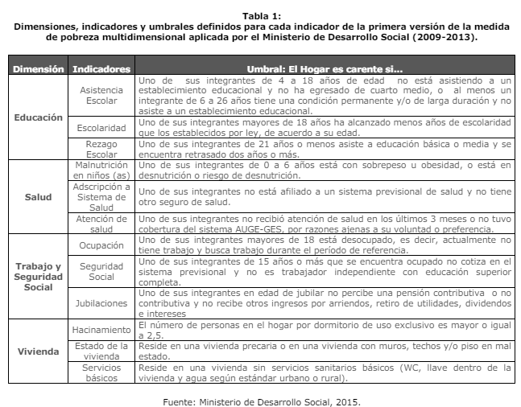

El Programa de las Naciones Unidas para el Desarrollo (PNUD) es la agencia de la Organización de las Naciones Unidas encargada de promover el desarrollo sostenible a nivel mundial, y uno de sus enfoques es la erradicación de la pobreza. En este contexto, el PNUD reconoce la importancia de abordar la pobreza multidimensional para lograr un desarrollo sostenible y mejorar el bienestar de las personas en todas las dimensiones de sus vidas.
Desde el año 2016 Chile cuenta con la medida actual de pobreza multidimensional. El propósito de esta medida es complementar la medición de la pobreza basada en ingresos con un indicador que refleje las condiciones de vida de la población en aspectos relevantes para el bienestar social y una vida digna. Desde su creación, se ha buscado obtener un diagnóstico más completo de la pobreza y contar con una herramienta útil para el diseño, implementación, monitoreo y evaluación de políticas públicas.
Inicialmente, la medida de pobreza multidimensional incluyó 4 dimensiones (Educación, Salud, Trabajo y Seguridad Social, y Vivienda) con tres indicadores por dimensión (12 indicadores en total), cada uno con igual ponderación (8,3%), por lo tanto, con dimensiones cuyo peso representan el 25% de la medida.Posteriormente, con los resultados de la encuesta Casen 2015 se incorpora una quinta dimensión de Redes y Cohesión Social y se amplía la dimensión de Vivienda para incluir el concepto de Entorno. Desde entonces, la medida ha estado compuesta por 5 dimensiones (Educación, Salud, Trabajo y Seguridad Social, Vivienda y Entorno, y Redes y Cohesión Social), manteniendo la definición de 3 indicadores por dimensión, de modo que la medida queda compuesta por 15 indicadores. Respecto del peso de las dimensiones, con el fin de favorecer cierta estabilidad de la medida, la dimensión de Redes y Cohesión Social se incorpora con un peso de 10% y se mantiene la igualdad de ponderación entre las demás dimensiones, ahora con una ponderación de 22,5%.
Objetivo general
El objetivo de este ejercicio práctico es comprender y estimar el proceso de construcción de índices ponderados y no ponderados en R.
Cargar paquetes
Código
pacman::p_load(tidyverse, #Conjunto de paquetes, sobre todo dplyr y ggplot2 car, #Para recodificar haven, summarytools, #Para descriptivos sjmisc, psych # para Alfa de Chronbach )options(scipen =999) # para desactivar notacion cientificarm(list =ls()) # para limpiar el entorno de trabajo
Datos y variables
La base de datos a utilizar es la CASEN 2022 (Encuesta de Caracterización Socioeconómica Nacional). La base de datos está disponible en este link y el cuestionario en este link.
Sin embargo, para realizar este ejercicio práctico utilizaremos una muestra aleatoria de esta base de datos para simplificar el proceso de construcción de índices. El código que crea este subset está disponible acá
Cargar base de datos
Código
load(url("https://github.com/cursos-metodos-facso/investigacion-cuantitativa/raw/main/files/data/casen2022.RData")) #Cargar base de datos
Generated by summarytools 1.0.1 (R version 4.3.2) 2024-05-07
En esta base de datos, las variables de interés que están presentes (ej. asistencia, rezago, escolaridad) son variables dummy, es decir, variables que tienen como valores posibles 0 y 1. Donde 0 implica la ausencia de un atributo y 1 la presencia del mismo atributo.
Para medir pobreza multidimensional, 1 indica la carencia de un servicio o cualidad, por ejemplo, se considera que un hogar es carente en escolaridad si al menos uno de sus integrantes mayores de 18 años ha alcanzado menos años de escolaridad que los establecidos por ley, de acuerdo a su edad. Por lo tanto, en la variable escolaridad 1) indica un hogar carente en escolaridad, que según nuestra base de datos corresponde a 3065 hogares (30.7% de nuestra sub-muestra).
Medición de pobreza multidimensional en cuatro dimensiones (hasta 2014)

Seleccionamos solo los indicadores que eran utilizados hasta 2014
Código
indicadores2014 <- casen2022 %>%select(asistencia, rezago, escolaridad, malnutricion, sist_salud, atencion, ocupacion, seg_social, jubilacion, hacinamiento, estado_vivienda=vivienda, serv_basicos) %>%na.omit() %>%# Eliminar Na'smutate_all(~(as.numeric(.))) # Convertimos todas las variables a numéricas
Con la función mutate creamos una nueva variable para cada dimensión, que contenga el promedio simple de los tres indicadores correspondientes.
Luego, como la pobreza multidimensional consideraba cuatro dimensiones equivalentes (sin ponderar), es posible obtener el índice de pobreza multidimensional a partir del promedio de las cuatro dimensiones.
Min. 1st Qu. Median Mean 3rd Qu. Max.
0.00000 0.00000 0.08333 0.10142 0.16667 0.66667
¿Cómo podemos conocer el porcentaje total de pobreza multidimensional del país?
El PNUD considera como límite para el índice de cuatro dimensiones un 25% de pobreza multidimensional (lo que equivale a tener carencia en los tres indicadores de una dimensión). Por lo tanto, podemos utilizar un condicional que indique “si” existe pobreza muldimensional cuando nuestra variable “pobreza” sea mayor o igual a 0.25 y que indique que “no” existe pobreza multidimensional cuando la variable “pobreza” sea menor a 0.25. case_when viene en dplyr.
Según el análisis realizado con la submuestra aleatoria de la CASEN, considerando las cuatro dimensiones que se utilizaban hasta el 2014, existe un 12.97% de pobreza multidimensional en Chile
Medición de pobreza multidimensional en cinco dimensiones (desde 2016)
Veamos ahora el mismo proceso, pero considerando la quinta dimensión que fue agregada en 2016 sobre Redes y Cohesión Social.
En esta operacionalización del índice de pobreza multidimensional las cuatro dimensiones originales equivalen a un 22.5% cada una, mientras que la nueva dimensión de redes y cohesión social equivale a un 10%.
Seleccionemos solo los indicadores que son utilizados desde 2016.
Sin embargo, como en esta ocasión se trata de un índice ponderado (con dimensiones con distinto peso cada una), multiplicamos cada dimensión por su peso correspondiente y las sumamos.
Min. 1st Qu. Median Mean 3rd Qu. Max.
0.000 3.333 7.500 10.988 15.000 62.500
¿Cómo podemos conocer el porcentaje total de pobreza multidimensional del país?
El PNUD considera como límite para el índice de cinco dimensiones un 22.5% de pobreza multidimensional (lo que equivale a tener carencia en los tres indicadores de una dimensión). Por lo tanto, podemos utilizar un condicional que indique “si” existe pobreza muldimensional cuando nuestra variable “pobreza” sea mayor o igual a 22.5 y que indique que “no” existe pobreza multidimensional cuando la variable “pobreza” sea menor a 22.5.
Según el análisis realizado con la submuestra aleatoria de la CASEN, considerando las cinco dimensiones que se comenzaron a utilizar en 2016, existe un 15.73% de pobreza multidimensional en Chile.
Otros
Podemos utilizar otras variables de la CASEN para poder conocer cómo se distribuye la pobreza multidimensional en Chile. Por ejemplo, porcentaje de pobreza multidimensional por región:
Para el taller práctico de hoy utilizaremos la base de datos del Estudio Longitudinal Social de Chile, realizado por el Centro de estudios del conflicto y la cohesión social COES.
El Estudio Longitudinal Social del Chile ELSOC, único en Chile y América Latina, consiste en encuestar a casi 3.000 chilenos, anualmente, a lo largo de una década. ELSOC ha sido diseñado para evaluar la manera cómo piensan, sienten y se comportan los chilenos en torno a un conjunto de temas referidos al conflicto y la cohesión social en Chile. La población objetivo son hombres y mujeres entre 15 y 75 años de edad, tiene una representación de la población nacional urbana, donde se obtuvo una muestra original de 2927 casos en el año 2016 y mantiene 1728 en 2022, además de una muestra de refresco en 2018.
Objetivo general
El objetivo de este ejercicio del práctico es revisar el proceso de construcción y validación de escalas en R.
Cargar base de datos
Código
load(url("https://dataverse.harvard.edu/api/access/datafile/7245118")) #Cargar base de datos
Visualización de datos
Código
dim(elsoc_long_2016_2022.2)
[1] 18035 750
Debido a la naturaleza longitudinal de ELSOC, la base de datos contiene 18035 casos (las mismas personas durante 6 años) y 750 variables (las mismas variables en 6 periodos distintos). Por lo tanto, para simplificar el proceso de análisis de este práctico trabajaremos solo con los casos y variables de quienes participaron en la primera ola (2016)
Datos y variables
Para el ejercicio de escalas, utilizaremos nuevamente la base de datos de ELSOC (que ya se enceuntra cargada), específicamente el módulo de Salud y Bienestar. De este módulo utilizaremos un concepto en particular llamado Estado de ánimo: sintomatología depresiva con los ítems:
Frecuencia: Poco interés o alegría
Frecuencia: Decaimiento, pesadez o desesperanza
Frecuencia: Dificultad para dormir o exceso de sueño
Frecuencia: Cansancio o sensación de falta de energía
Frecuencia: Apetito disminuido o aumentado
Frecuencia: Dificultad para concentrarse
Frecuencia: Mala opinión de sí mismo
Frecuencia: Enlentecimiento físico
Frecuencia: Pensamiento de muerte o dañarse
Esta escala tiene solamente una dimensión, por lo que no es necesario crear objetos que contengan a cada dimensión (como vimos la clase pasada).
Filtrar base de datos
Filtraremos la base de datos para quedarnos con las observaciones correspondientes solamente a la ola 1, y además seleccionaremos los ítems de interés.
Código
data2 <- elsoc_long_2016_2022.2%>%filter(ola==1) %>%# seleccionamos solo los casos de la ola 1select(s11_01,s11_02,s11_03,s11_04,s11_05,s11_06,s11_07,s11_08,s11_09) # items sintomatologia depresivahead(data2)
Estos ítems cuentan con las mismas categorías de respuesta: (1) Nunca, (2) Algunos dias, (3) Mas de la mitad de los dias, (4) Casi todos los dias, y (5) Todos los dias. Además de los valores codificados como -888 y -999.
Recodificar
Recodificamos los valores -888 y -999 en NA y eliminamos los NAs.
Código
data2 <- data2 %>%set_na(., na =c(-888, -999)) %>%na.omit()
Análisis
Estimar correlación
Dado que la escala tiene solamente una dimensión, estimaremos la correlación de toda la escala.
Min. 1st Qu. Median Mean 3rd Qu. Max.
9.00 11.00 14.00 14.99 17.00 45.00
¿Tiene sentido una escala de 9 a 45? No, por eso generalmente se recomienda que las variables ordinales partan en ‘0’ para que el comienzo de la escala también sea 0. En ese caso, deberíamos recodificar las 9 variables en una escala de 0 a 4.
Ejecutar el código
---title: "Práctico 7. Índices y escalas"subtitle: "R data analisis"linktitle: "Práctico 7: Índices y escalas"date: "2024-04-23"lang: es---# Índices## PresentaciónEl Programa de las Naciones Unidas para el Desarrollo (PNUD) es la agencia de la Organización delas Naciones Unidas encargada de promover el desarrollo sostenible a nivel mundial, y uno de susenfoques es la erradicación de la pobreza. En este contexto, el PNUD reconoce la importancia deabordar la pobreza multidimensional para lograr un desarrollo sostenible y mejorar el bienestar delas personas en todas las dimensiones de sus vidas.Desde el año 2016 Chile cuenta con la medida actual de pobreza multidimensional. El propósito deesta medida es complementar la medición de la pobreza basada en ingresos con un indicador querefleje las condiciones de vida de la población en aspectos relevantes para el bienestar social y unavida digna. Desde su creación, se ha buscado obtener un diagnóstico más completo de la pobreza ycontar con una herramienta útil para el diseño, implementación, monitoreo y evaluación de políticaspúblicas.Inicialmente, la medida de pobreza multidimensional incluyó 4 dimensiones (Educación, Salud,Trabajo y Seguridad Social, y Vivienda) con tres indicadores por dimensión (12 indicadores en total),cada uno con igual ponderación (8,3%), por lo tanto, con dimensiones cuyo peso representan el 25%de la medida.Posteriormente, con los resultados de la encuesta Casen 2015 se incorpora una quinta dimensiónde Redes y Cohesión Social y se amplía la dimensión de Vivienda para incluir el concepto de Entorno.Desde entonces, la medida ha estado compuesta por 5 dimensiones (Educación, Salud, Trabajo ySeguridad Social, Vivienda y Entorno, y Redes y Cohesión Social), manteniendo la definición de 3indicadores por dimensión, de modo que la medida queda compuesta por 15 indicadores. Respectodel peso de las dimensiones, con el fin de favorecer cierta estabilidad de la medida, la dimensión de Redes y Cohesión Social se incorpora con un peso de 10% y se mantiene la igualdad deponderación entre las demás dimensiones, ahora con una ponderación de 22,5%.## Objetivo generalEl objetivo de este ejercicio práctico es comprender y estimar el proceso de construcción de índices ponderados y no ponderados en R.## Cargar paquetes```{r}pacman::p_load(tidyverse, #Conjunto de paquetes, sobre todo dplyr y ggplot2 car, #Para recodificar haven, summarytools, #Para descriptivos sjmisc, psych # para Alfa de Chronbach )options(scipen =999) # para desactivar notacion cientificarm(list =ls()) # para limpiar el entorno de trabajo```## Datos y variablesLa base de datos a utilizar es la CASEN 2022 (Encuesta de Caracterización Socioeconómica Nacional). La base de datos está disponible en este [link](https://observatorio.ministeriodesarrollosocial.gob.cl/encuesta-casen-2022#basedatos) y el cuestionario en este [link](https://observatorio.ministeriodesarrollosocial.gob.cl/encuesta-casen-2022#cuestionarios).Sin embargo, para realizar este ejercicio práctico utilizaremos una muestra aleatoria de esta base de datos para simplificar el proceso de construcción de índices. El código que crea este subset está disponible [acá](https://github.com/cursos-metodos-facso/investigacion-cuantitativa/blob/main/files/subset_casen.R)### Cargar base de datos```{r }load(url("https://github.com/cursos-metodos-facso/investigacion-cuantitativa/raw/main/files/data/casen2022.RData")) #Cargar base de datos```### Descripción de variables```{r eval=FALSE }view(dfSummary(casen2022, headings=FALSE, graph.col = FALSE))``````{r echo=FALSE}print(dfSummary(casen2022, headings = FALSE, graph.col = FALSE), method = "render")```En esta base de datos, las variables de interés que están presentes (ej. asistencia, rezago, escolaridad) son variables dummy, es decir, variables que tienen como valores posibles 0 y 1. Donde 0 implica la ausencia de un atributo y 1 la presencia del mismo atributo.Para medir pobreza multidimensional, 1 indica la carencia de un servicio o cualidad, por ejemplo, se considera que un hogar es carente en escolaridad si al menos uno de sus integrantes mayores de 18 años ha alcanzado menos años de escolaridad que los establecidos por ley, de acuerdo a su edad. Por lo tanto, en la variable escolaridad 1) indica un hogar carente en escolaridad, que según nuestra base de datos corresponde a 3065 hogares (30.7% de nuestra sub-muestra).## Medición de pobreza multidimensional en cuatro dimensiones (hasta 2014)Seleccionamos solo los indicadores que eran utilizados hasta 2014```{r}indicadores2014 <- casen2022 %>%select(asistencia, rezago, escolaridad, malnutricion, sist_salud, atencion, ocupacion, seg_social, jubilacion, hacinamiento, estado_vivienda=vivienda, serv_basicos) %>%na.omit() %>%# Eliminar Na'smutate_all(~(as.numeric(.))) # Convertimos todas las variables a numéricas```Con la función *mutate* creamos una nueva variable para cada dimensión, que contenga el promedio simple de los tres indicadores correspondientes.```{r}indicadores2014 = indicadores2014 %>%rowwise() %>%mutate(educ =mean(c(asistencia, rezago, escolaridad)),salud =mean(c(malnutricion, sist_salud, atencion)),trabajo=mean(c(ocupacion, seg_social, jubilacion)),vivienda=mean(c(hacinamiento, estado_vivienda, serv_basicos))) %>%ungroup()```Luego, como la pobreza multidimensional consideraba cuatro dimensiones equivalentes (sin ponderar), es posible obtener el índice de pobreza multidimensional a partir del promedio de las cuatro dimensiones.```{r}indicadores2014 = indicadores2014 %>%rowwise() %>%mutate(pobreza =mean(c(educ, salud, trabajo, vivienda))) %>%ungroup()```Lo que nos da este resultado:```{r}indicadores2014 %>%select(pobreza) %>%head(10) # Primeros 10 casossummary(indicadores2014$pobreza) # Resumen```¿Cómo podemos conocer el porcentaje total de pobreza multidimensional del país?El PNUD considera como límite para el índice de cuatro dimensiones un 25% de pobreza multidimensional (lo que equivale a tener carencia en los tres indicadores de una dimensión). Por lo tanto, podemos utilizar un condicional que indique "si" existe pobreza muldimensional cuando nuestra variable "pobreza" sea mayor o igual a 0.25 y que indique que "no" existe pobreza multidimensional cuando la variable "pobreza" sea menor a 0.25. *case_when* viene en dplyr.```{r}indicadores2014 <- indicadores2014 %>%mutate(pobreza =case_when(pobreza>=0.25~"si", pobreza<0.25~"no") )prop.table(table(indicadores2014$pobreza))*100```Según el análisis realizado con la submuestra aleatoria de la CASEN, considerando las cuatro dimensiones que se utilizaban hasta el 2014, existe un 12.97% de pobreza multidimensional en Chile## Medición de pobreza multidimensional en cinco dimensiones (desde 2016)Veamos ahora el mismo proceso, pero considerando la quinta dimensión que fue agregada en 2016 sobre Redes y Cohesión Social.En esta operacionalización del índice de pobreza multidimensional las cuatro dimensiones originales equivalen a un 22.5% cada una, mientras que la nueva dimensión de redes y cohesión social equivale a un 10%.Seleccionemos solo los indicadores que son utilizados desde 2016.```{r}indicadores2016 <- casen2022 %>%select(asistencia, rezago, escolaridad, malnutricion, sist_salud, atencion, ocupacion, seg_social, jubilacion, habitabilidad, serv_basicos, entorno, ap_part_social, trato, seguridad, area, region) %>%na.omit() %>%# Eliminar Na'smutate_all(~(as.numeric(.))) # Convertimos todas las variables a numéricas```Seguimos los mismos pasos que con el índice anterior, estimando un promedio simple para cada una de las dimensiones.```{r}indicadores2016 = indicadores2016 %>%rowwise() %>%mutate(educ =mean(c(asistencia, rezago, escolaridad)),salud =mean(c(malnutricion, sist_salud, atencion)),trabajo=mean(c(ocupacion, seg_social, jubilacion)),vivienda=mean(c(habitabilidad, serv_basicos, entorno)),redes_cohesion=mean(c(ap_part_social, trato, seguridad))) %>%ungroup()```Sin embargo, como en esta ocasión se trata de un índice ponderado (con dimensiones con distinto peso cada una), multiplicamos cada dimensión por su peso correspondiente y las sumamos.```{r}indicadores2016 = indicadores2016 %>%rowwise() %>%mutate(pobreza_pond = (educ*22.5) + (salud*22.5) + (trabajo*22.5) + (vivienda*22.5) + (redes_cohesion*10)) %>%ungroup()```Lo que nos da este resultado:```{r}indicadores2016 %>%select(pobreza_pond) %>%head(10) # Primeros 10 casossummary(indicadores2016$pobreza_pond) # Resumen```¿Cómo podemos conocer el porcentaje total de pobreza multidimensional del país?El PNUD considera como límite para el índice de cinco dimensiones un 22.5% de pobreza multidimensional (lo que equivale a tener carencia en los tres indicadores de una dimensión). Por lo tanto, podemos utilizar un condicional que indique "si" existe pobreza muldimensional cuando nuestra variable "pobreza" sea mayor o igual a 22.5 y que indique que "no" existe pobreza multidimensional cuando la variable "pobreza" sea menor a 22.5.```{r}indicadores2016 <- indicadores2016 %>%mutate(pobreza =case_when(pobreza_pond>=22.5~"si", pobreza_pond<22.5~"no") )prop.table(table(indicadores2016$pobreza))*100```Según el análisis realizado con la submuestra aleatoria de la CASEN, considerando las cinco dimensiones que se comenzaron a utilizar en 2016, existe un 15.73% de pobreza multidimensional en Chile.### OtrosPodemos utilizar otras variables de la CASEN para poder conocer cómo se distribuye la pobreza multidimensional en Chile. Por ejemplo, porcentaje de pobreza multidimensional por región: ```{r}prop.table(table(indicadores2016$region, indicadores2016$pobreza), margin =1)```o pobreza multidimensional por zona geográfica 1) urbano 2) rural```{r}prop.table(table(indicadores2016$area, indicadores2016$pobreza), margin =1)```# Escalas## PresentaciónPara el taller práctico de hoy utilizaremos la base de datos del Estudio Longitudinal Social de Chile, realizado por el Centro de estudios del conflicto y la cohesión social [COES](https://coes.cl/).El Estudio Longitudinal Social del Chile [ELSOC](https://coes.cl/encuesta-panel/), único en Chile y América Latina, consiste en encuestar a casi 3.000 chilenos, anualmente, a lo largo de una década. ELSOC ha sido diseñado para evaluar la manera cómo piensan, sienten y se comportan los chilenos en torno a un conjunto de temas referidos al conflicto y la cohesión social en Chile. La población objetivo son hombres y mujeres entre 15 y 75 años de edad, tiene una representación de la población nacional urbana, donde se obtuvo una muestra original de **2927** casos en el año 2016 y mantiene **1728** en 2022, además de una muestra de refresco en 2018.## Objetivo generalEl objetivo de este ejercicio del práctico es revisar el proceso de construcción y validación de escalas en R.### Cargar base de datos```{r }load(url("https://dataverse.harvard.edu/api/access/datafile/7245118")) #Cargar base de datos```### Visualización de datos```{r}dim(elsoc_long_2016_2022.2)```Debido a la naturaleza longitudinal de ELSOC, la base de datos contiene 18035 casos (las mismas personas durante 6 años) y 750 variables (las mismas variables en 6 periodos distintos). Por lo tanto, para simplificar el proceso de análisis de este práctico trabajaremos solo con los casos y variables de quienes participaron en la primera ola (2016)## Datos y variablesPara el ejercicio de escalas, utilizaremos nuevamente la base de datos de ELSOC (que ya se enceuntra cargada), específicamente el módulo de **Salud y Bienestar**. De este módulo utilizaremos un concepto en particular llamado *Estado de ánimo: sintomatología depresiva* con los ítems:- Frecuencia: Poco interés o alegría- Frecuencia: Decaimiento, pesadez o desesperanza- Frecuencia: Dificultad para dormir o exceso de sueño- Frecuencia: Cansancio o sensación de falta de energía- Frecuencia: Apetito disminuido o aumentado- Frecuencia: Dificultad para concentrarse- Frecuencia: Mala opinión de sí mismo- Frecuencia: Enlentecimiento físico- Frecuencia: Pensamiento de muerte o dañarseEsta escala tiene solamente una dimensión, por lo que no es necesario crear objetos que contengan a cada dimensión (como vimos la clase pasada).## Filtrar base de datosFiltraremos la base de datos para quedarnos con las observaciones correspondientes solamente a la ola 1, y además seleccionaremos los ítems de interés.```{r}data2 <- elsoc_long_2016_2022.2%>%filter(ola==1) %>%# seleccionamos solo los casos de la ola 1select(s11_01,s11_02,s11_03,s11_04,s11_05,s11_06,s11_07,s11_08,s11_09) # items sintomatologia depresivahead(data2)table(data2$s11_01)table(data2$s11_02)table(data2$s11_03)table(data2$s11_04)```Estos ítems cuentan con las mismas categorías de respuesta: (1) Nunca, (2) Algunos dias, (3) Mas de la mitad de los dias, (4) Casi todos los dias, y (5) Todos los dias. Además de los valores codificados como -888 y -999.### RecodificarRecodificamos los valores -888 y -999 en NA y eliminamos los NAs.```{r, message=FALSE, warning=FALSE}data2 <- data2 %>% set_na(., na = c(-888, -999)) %>% na.omit()```## Análisis### Estimar correlaciónDado que la escala tiene solamente una dimensión, estimaremos la correlación de toda la escala.```{r}cor(data2)```Podemos observar que todas las correlaciones son positivas, por lo que no quedaron ítems invertidos.### Estimar consistencia interna#### Alfa de ChronbachPrimero, estimaremos la consistencia interna de cada dimensión con un **Alfa de Chronbach**.```{r}psych::alpha(data2)``````{r}data2 <- data2 %>%rowwise() %>%mutate(sintomatologia_depresiva =sum(s11_01,s11_02,s11_03,s11_04,s11_05,s11_06,s11_07,s11_08,s11_09))summary(data2$sintomatologia_depresiva)```¿Tiene sentido una escala de 9 a 45? No, por eso generalmente se recomienda que las variables ordinales partan en '0' para que el comienzo de la escala también sea 0. En ese caso, deberíamos recodificar las 9 variables en una escala de 0 a 4.